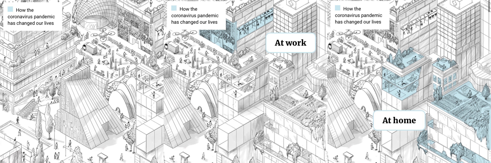
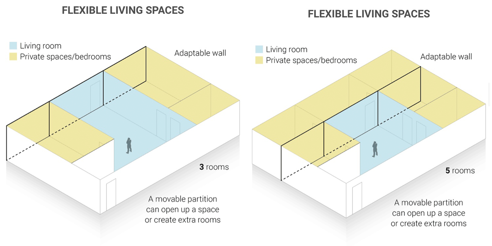
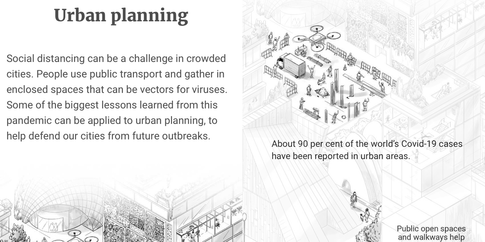

INFOGRAFÍA IMPRESA
En la infografía “How the coronavirus is changing cities” (hecha por Pablo Robles, Brian Wang, Dennis Wong, Darren Long, Alfonso Arranz y Andrew London) lo primero que llama la atención es una ilustración de una ciudad, la cual, al mirarla con mayor detenimiento nos muestra destacado en amarillo algunos de estos cambios que están ocurriendo debido a la reciente pandemia en las ciudades. Además, la ciudad contiene números marcando donde ocurren en este mapa las actividades explicadas abajo.

En la parte inferior de la infografía se explica con el uso de gráficos figurativos distintas medidas de seguridad. La primera explicando los protocolos y tecnologías usadas en aeropuertos.

El gráfico del punto 2 muestra tecnologías en puertas y escaleras mecánicas para evitar infecciones, mientras que en el 3 se muestra la nueva disposición en oficinas.

En el cuarto punto explican cómo pueden estar rediseñados en algún futuro los hospitales para un aislamiento especial más eficiente.

El último punto muestra cómo en edificios pequeños se utilizan paredes movibles para generar un espacio versátil para distintas funciones.

INFOGRAFÍA DIGITAL
Este primer gráfico introductorio al deslizar destaca cada tema que abordará la infografía, sin embargo no capta la atención suficiente hasta llegar al texto, debido a la cantidad de información que se despliega simultaneamente al arrastrar hacia abajo..
El siguiente gráfico interactivo a diferencia del impreso, permite dimensionar y visualizar el cambio que surge en el espacio con las paredes adaptables de las que se hablan y que en este gráfico se mueven de un lado a otro.
Este gráfico también interactivo despliega información al poner el mouse sobre el texto del tema que se quiere abordar y que también le da un plus que el tema del que se está hablamdo es la automatización de la tecnología, ya que refleja totalmente eso.

Por último, se puede ver el enfoque que ocurre en toda la infografia al desplazar la página dependiendo del punto que se quiere abordar y que permite captar mucho más la atención en algo en especifico y de una manera mucho más profunda en comparación a la infografía impresa que se muestra de una manera más general y sintética donde el usuario decide qué quiere ver y qué no.
¿Cómo podrían justificarse todas las modificaciones? ¿Se trata de una simple adaptación de datos de un sustrato a otro? Convendría pensar en una reestructuración completa del trabajo infográfico, que se hace atiendiendo a los usos y costumbres asociadas a cada medio?